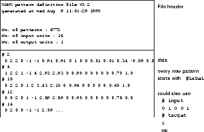

To train a network on your own data you first have to massage the data
into a format that SNNS can understand. Fortunately this is quite
easy. SNNS data files have a header component and a data component.
The header defines how many patterns the file contains as well as the
dimensionality of the input and target vectors. The files are saved as
ASCII test. An example is given in figure  .
.

The header has to conform exactly to the SNNS format, so watch out for
extra spaces etc. I found it easiest to copy headers from one of the
example pattern files and to edit the numbers. The data component of
the pattern file is simply a listing of numbers that represent the
activations of the input and output units. For each pattern the number
of values has to match the number of input plus thenumber of output
units of the network as defined in the header. For clarity you may
wish to put comments (lines starting with a hash (#)) between your
patterns like shown in figure  . They are ignored by SNNS
but may be used by some pattern processing tools. The pattern
definitions may have 'CR' characters in them.
. They are ignored by SNNS
but may be used by some pattern processing tools. The pattern
definitions may have 'CR' characters in them.
Note that while the results saved by SNNS use (almost) the same file format as used for the pattern files, the label values defined in the pattern files are not used.